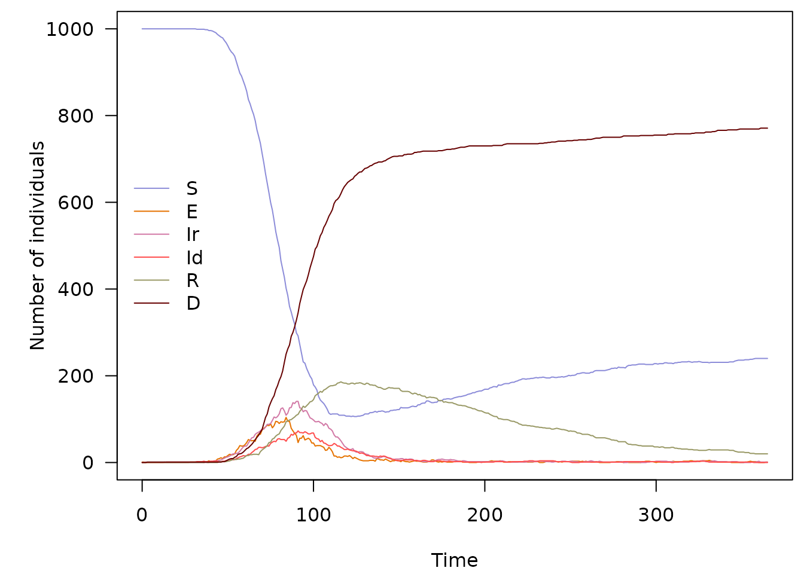

vignettes/discrete.Rmd
discrete.RmdIn its simplest form, a SIR model is typically written in continuous time as:
\[ \frac{dS}{dt} = - \beta \frac{S_t I_t}{N_t} \]
\[ \frac{dI}{dt} = \beta \frac{S_t I_t}{N_t} - \gamma I_t \]
\[ \frac{dR}{dt} = \gamma I_t \]
Where \(\beta\) is an infection rate and \(\gamma\) a removal rate, assuming ‘R’ stands for ‘recovered’, which can mean recovery or death.
For discrete time equivalent, we take a small time step \(t\) (typically a day), and write the changes of individuals in each compartment as:
\[ S_{t+1} = S_t - \beta \frac{S_t I_t}{N_t} \]
\[ I_{t+1} = I_t + \beta \frac{S_t I_t}{N_t} - \gamma I_t \]
\[ R_{t+1} = R_t + \gamma I_t \]
The discrete model above remains deterministic: for given values of the rates \(\beta\) and \(\gamma\), dynamics will be fixed. It is fairly straightforward to convert this discrete model into a stochastic one: one merely needs to uses appropriate probability distributions to model the transfer of individuals across compartments. There are at least 3 types of such distributions which will be useful to consider.
This distribution will be used to determine numbers of individuals leaving a given compartment. While we may be tempted to use a Poisson distribution with the rates specified in the equations above, this could lead to over-shooting, i.e. more individuals leaving a compartment than there actually are. To avoid infecting more people than there are susceptibles, we use a binomial distribution, with one draw for each individual in the compartment of interest. The workflow will be:
determine a per-capita probability of leaving the compartment, based on the original rates specified in the equations; if the rate at which each individual leaves a compartment is \(\lambda\), then the corresponding probability of this individual leaving the compartment in one time unit is \(p = 1 - e^{- \lambda}\).
determine the number of individuals leaving the compartment using a Binomial distribution, with one draw per individual and a probability \(p\)
As an example, let us consider transition \(S \rightarrow I\) in the SIR model. The overall rate at which this change happens is \(\beta \frac{S_t I_t}{N_t}\). The corresponding per susceptible rate is \(\beta \frac{I_t}{N_t}\). Therefore, the probability for an individual to move from S to I at time \(t\) is \(p_{(S \rightarrow I), t} = 1 - e^{- \beta \frac{I_t}{N_t}}\).
Poisson distributions will be useful when individuals enter a compartment at a given rate, from ‘the outside’. This could be birth or migration (for \(S\)), or introduction of infections from an external reservoir (for \(I\)), etc. The essential distinction with the previous process is that individuals are not leaving an existing compartment.
This case is simple to handle: one just needs to draw new individuals entering the compartment from a Poisson distribution with the rate directly coming from the equations.
For instance, let us now consider a variant of the SIR model where new infectious cases are imported at a constant rate \(\epsilon\). The only change to the equation is for the infected compartment:
\[ I_{t+1} = I_t + \beta \frac{S_t I_t}{N_t} + \epsilon - \gamma I_t \]
where:
individuals move from \(S\) to \(I\) according to a Binomial distribution \(\mathcal{B}(S_t, 1 - e^{- \beta \frac{I_t}{N_t}})\)
new infected individuals are imported according to a Poisson distribution \(\mathcal{P}(\epsilon)\)
individual move from \(I\) to \(R\) according to a Binomial distribution \(\mathcal{B}(I_t, 1 - e^{- \gamma})\)
This distribution will be useful when individuals leaving a compartment are distributed over several compartments. The Multinomial distribution will be used to determine how many individuals end up in each compartment. Let us assume that individuals move from a compartment \(X\) to compartments \(A\), \(B\), and \(C\), at rates \(\lambda_A\), \(\lambda_B\) and \(\lambda_C\). The workflow to handle these transitions will be:
determine the total number of individuals leaving \(X\); this is done by summing the rates (\(\lambda = \lambda_A + \lambda_B + \lambda_C\)) to compute the per capita probability of leaving \(X\) \((p_(X \rightarrow ...) = 1 - e^{- \lambda})\), and drawing the number of individuals leaving \(X\) (\(n_{_(X \rightarrow ...)}\)) from a binomial distribution \(n_{(X \rightarrow ...)} \sim B(X, p_(X \rightarrow ...))\)
compute relative probabilities of moving to the different compartments (using \(i\) as a placeholder for \(A\), \(B\), \(C\)): \(p_i = \frac{\lambda_i}{\sum_i \lambda_i}\)
determine the numbers of individuals moving to \(A\), \(B\) and \(C\) using a Multinomial distribution: \(n_{(X \rightarrow A, B, C)} \sim \mathcal{M}(n_{(X \rightarrow ...)}, p_A, p_B, p_C)\)
odin
We start by loading the odin code for a discrete,
stochastic SIR model:
path_sir_model <- system.file("examples/discrete_deterministic_sir.R",
package = "odin")
## Core equations for transitions between compartments:
update(S) <- S - beta * S * I / N
update(I) <- I + beta * S * I / N - gamma * I
update(R) <- R + gamma * I
## Total population size (odin will recompute this at each timestep:
## automatically)
N <- S + I + R
## Initial states:
initial(S) <- S_ini # will be user-defined
initial(I) <- I_ini # will be user-defined
initial(R) <- 0
## User defined parameters - default in parentheses:
S_ini <- user(1000)
I_ini <- user(1)
beta <- user(0.2)
gamma <- user(0.1)As said in the previous vignette, remember this looks and parses like R code, but is not actually R code. Copy-pasting this in a R session will trigger errors.
We then use odin to compile this model:
sir_generator <- odin::odin(path_sir_model)## Loading required namespace: pkgbuild
sir_generator## <odin_model> object generator
## Public:
## initialize: function (..., user = list(...), use_dde = FALSE, unused_user_action = NULL)
## ir: function ()
## set_user: function (..., user = list(...), unused_user_action = NULL)
## initial: function (step)
## rhs: function (step, y)
## update: function (step, y)
## contents: function ()
## transform_variables: function (y)
## engine: function ()
## run: function (step, y = NULL, ..., use_names = TRUE)
## Private:
## ptr: NULL
## use_dde: NULL
## odin: NULL
## variable_order: NULL
## output_order: NULL
## n_out: NULL
## ynames: NULL
## interpolate_t: NULL
## cfuns: list
## dll: discrete.deterministic.sircae35f1d
## user: beta gamma I_ini S_ini
## registration: function ()
## set_initial: function (step, y, use_dde)
## update_metadata: function ()
## Parent env: <environment: namespace:discrete.deterministic.sircae35f1d>
## Locked objects: TRUE
## Locked class: FALSE
## Portable: TRUENote: this is the slow part (generation and then compilation of C code)! Which means for computer-intensive work, the number of times this is done should be minimized.
The returned object sir_generatoris an R6 generator that
can be used to create an instance of the model: generate an instance of
the model:
x <- sir_generator$new()
x## <odin_model>
## Public:
## contents: function ()
## engine: function ()
## initial: function (step)
## initialize: function (..., user = list(...), use_dde = FALSE, unused_user_action = NULL)
## ir: function ()
## rhs: function (step, y)
## run: function (step, y = NULL, ..., use_names = TRUE)
## set_user: function (..., user = list(...), unused_user_action = NULL)
## transform_variables: function (y)
## update: function (step, y)
## Private:
## cfuns: list
## dll: discrete.deterministic.sircae35f1d
## interpolate_t: NULL
## n_out: 0
## odin: environment
## output_order: NULL
## ptr: externalptr
## registration: function ()
## set_initial: function (step, y, use_dde)
## update_metadata: function ()
## use_dde: FALSE
## user: beta gamma I_ini S_ini
## variable_order: list
## ynames: step S I Rx is an ode_model object which can be used
to generate dynamics of a discrete-time, deterministic SIR model. This
is achieved using the function x$run(), providing time
steps as single argument, e.g.:
sir_col <- c("#8c8cd9", "#cc0044", "#999966")
x$run(0:10)## step S I R
## [1,] 0 1000.0000 1.000000 0.0000000
## [2,] 1 999.8002 1.099800 0.1000000
## [3,] 2 999.5805 1.209517 0.2099800
## [4,] 3 999.3389 1.330125 0.3309317
## [5,] 4 999.0734 1.462696 0.4639442
## [6,] 5 998.7814 1.608403 0.6102138
## [7,] 6 998.4604 1.768530 0.7710541
## [8,] 7 998.1076 1.944486 0.9479071
## [9,] 8 997.7198 2.137811 1.1423557
## [10,] 9 997.2937 2.350191 1.3561368
## [11,] 10 996.8254 2.583469 1.5911558
x_res <- x$run(0:200)
par(mar = c(4.1, 5.1, 0.5, 0.5), las = 1)
matplot(x_res[, 1], x_res[, -1], xlab = "Time", ylab = "Number of individuals",
type = "l", col = sir_col, lty = 1)
legend("topright", lwd = 1, col = sir_col, legend = c("S", "I", "R"), bty = "n")
An example of deterministic, discrete-time SIR model
The stochastic equivalent of the previous model can be formulated in
odin as follows:
path_sir_model_s <- system.file("examples/discrete_stochastic_sir.R",
package = "odin")
## Core equations for transitions between compartments:
update(S) <- S - n_SI
update(I) <- I + n_SI - n_IR
update(R) <- R + n_IR
## Individual probabilities of transition:
p_SI <- 1 - exp(-beta * I / N) # S to I
p_IR <- 1 - exp(-gamma) # I to R
## Draws from binomial distributions for numbers changing between
## compartments:
n_SI <- rbinom(S, p_SI)
n_IR <- rbinom(I, p_IR)
## Total population size
N <- S + I + R
## Initial states:
initial(S) <- S_ini
initial(I) <- I_ini
initial(R) <- 0
## User defined parameters - default in parentheses:
S_ini <- user(1000)
I_ini <- user(1)
beta <- user(0.2)
gamma <- user(0.1)We can use the same workflow as before to run the model, using 10
initial infected individuals (I_ini = 10):
sir_s_generator <- odin::odin(path_sir_model_s)
sir_s_generator## <odin_model> object generator
## Public:
## initialize: function (..., user = list(...), use_dde = FALSE, unused_user_action = NULL)
## ir: function ()
## set_user: function (..., user = list(...), unused_user_action = NULL)
## initial: function (step)
## rhs: function (step, y)
## update: function (step, y)
## contents: function ()
## transform_variables: function (y)
## engine: function ()
## run: function (step, y = NULL, ..., use_names = TRUE)
## Private:
## ptr: NULL
## use_dde: NULL
## odin: NULL
## variable_order: NULL
## output_order: NULL
## n_out: NULL
## ynames: NULL
## interpolate_t: NULL
## cfuns: list
## dll: discrete.stochastic.sir0da50947
## user: beta gamma I_ini S_ini
## registration: function ()
## set_initial: function (step, y, use_dde)
## update_metadata: function ()
## Parent env: <environment: namespace:discrete.stochastic.sir0da50947>
## Locked objects: TRUE
## Locked class: FALSE
## Portable: TRUE
x <- sir_s_generator$new(I_ini = 10)
set.seed(1)
x_res <- x$run(0:100)
par(mar = c(4.1, 5.1, 0.5, 0.5), las = 1)
matplot(x_res[, 1], x_res[, -1], xlab = "Time", ylab = "Number of individuals",
type = "l", col = sir_col, lty = 1)
legend("topright", lwd = 1, col = sir_col, legend = c("S", "I", "R"), bty = "n")
An example of stochastic, discrete-time SIR model
This gives us a single stochastic realisation of the model, which is of limited interest. As an alternative, we can generate a large number of replicates using arrays for each compartment:
path_sir_model_s_a <- system.file("examples/discrete_stochastic_sir_arrays.R",
package = "odin")
## Core equations for transitions between compartments:
update(S[]) <- S[i] - n_SI[i]
update(I[]) <- I[i] + n_SI[i] - n_IR[i]
update(R[]) <- R[i] + n_IR[i]
## Individual probabilities of transition:
p_SI[] <- 1 - exp(-beta * I[i] / N[i])
p_IR <- 1 - exp(-gamma)
## Draws from binomial distributions for numbers changing between
## compartments:
n_SI[] <- rbinom(S[i], p_SI[i])
n_IR[] <- rbinom(I[i], p_IR)
## Total population size
N[] <- S[i] + I[i] + R[i]
## Initial states:
initial(S[]) <- S_ini
initial(I[]) <- I_ini
initial(R[]) <- 0
## User defined parameters - default in parentheses:
S_ini <- user(1000)
I_ini <- user(1)
beta <- user(0.2)
gamma <- user(0.1)
## Number of replicates
nsim <- user(100)
dim(N) <- nsim
dim(S) <- nsim
dim(I) <- nsim
dim(R) <- nsim
dim(p_SI) <- nsim
dim(n_SI) <- nsim
dim(n_IR) <- nsim
sir_s_a_generator <- odin::odin(path_sir_model_s_a)
sir_s_a_generator## <odin_model> object generator
## Public:
## initialize: function (..., user = list(...), use_dde = FALSE, unused_user_action = NULL)
## ir: function ()
## set_user: function (..., user = list(...), unused_user_action = NULL)
## initial: function (step)
## rhs: function (step, y)
## update: function (step, y)
## contents: function ()
## transform_variables: function (y)
## engine: function ()
## run: function (step, y = NULL, ..., use_names = TRUE)
## Private:
## ptr: NULL
## use_dde: NULL
## odin: NULL
## variable_order: NULL
## output_order: NULL
## n_out: NULL
## ynames: NULL
## interpolate_t: NULL
## cfuns: list
## dll: discrete.stochastic.sir.arraysbbe58d63
## user: beta gamma I_ini nsim S_ini
## registration: function ()
## set_initial: function (step, y, use_dde)
## update_metadata: function ()
## Parent env: <environment: namespace:discrete.stochastic.sir.arraysbbe58d63>
## Locked objects: TRUE
## Locked class: FALSE
## Portable: TRUE
x <- sir_s_a_generator$new()
set.seed(1)
sir_col_transp <- paste0(sir_col, "66")
x_res <- x$run(0:100)
par(mar = c(4.1, 5.1, 0.5, 0.5), las = 1)
matplot(x_res[, 1], x_res[, -1], xlab = "Time", ylab = "Number of individuals",
type = "l", col = rep(sir_col_transp, each = 100), lty = 1)
legend("left", lwd = 1, col = sir_col, legend = c("S", "I", "R"), bty = "n")
100 replicates of a stochastic, discrete-time SIR model
This model is a more complex version of the previous one, which we will use to illustrate the use of all distributions mentioned in the first part: Binomial, Poisson and Multinomial.
The model is contains the following compartments:
There are no birth of natural death processes in this model. Parameters are:
The model will be written as:
\[ S_{t+1} = S_t - \beta \frac{S_t (I_{R,t} + I_{D,t})}{N_t} + \omega R_t \]
\[ E_{t+1} = E_t + \beta \frac{S_t (I_{R,t} + I_{D,t})}{N_t} - \delta E_t + \epsilon \]
\[ I_{R,t+1} = I_{R,t} + \delta (1 - \mu) E_t - \gamma_R I_{R,t} + \epsilon \]
\[ I_{D,t+1} = I_{D,t} + \delta \mu E_t - \gamma_D I_{D,t} + \epsilon \]
\[ R_{t+1} = R_t + \gamma_R I_{R,t} - \omega R_t \]
\[ D_{t+1} = D_t + \gamma_D I_{D,t} \]
The formulation of the model in odin is:
path_seirds_model <- system.file("examples/discrete_stochastic_seirds.R",
package = "odin")
## Core equations for transitions between compartments:
update(S) <- S - n_SE + n_RS
update(E) <- E + n_SE - n_EI + n_import_E
update(Ir) <- Ir + n_EIr - n_IrR
update(Id) <- Id + n_EId - n_IdD
update(R) <- R + n_IrR - n_RS
update(D) <- D + n_IdD
## Individual probabilities of transition:
p_SE <- 1 - exp(-beta * I / N)
p_EI <- 1 - exp(-delta)
p_IrR <- 1 - exp(-gamma_R) # Ir to R
p_IdD <- 1 - exp(-gamma_D) # Id to d
p_RS <- 1 - exp(-omega) # R to S
## Draws from binomial distributions for numbers changing between
## compartments:
n_SE <- rbinom(S, p_SE)
n_EI <- rbinom(E, p_EI)
n_EIrId[] <- rmultinom(n_EI, p)
p[1] <- 1 - mu
p[2] <- mu
dim(p) <- 2
dim(n_EIrId) <- 2
n_EIr <- n_EIrId[1]
n_EId <- n_EIrId[2]
n_IrR <- rbinom(Ir, p_IrR)
n_IdD <- rbinom(Id, p_IdD)
n_RS <- rbinom(R, p_RS)
n_import_E <- rpois(epsilon)
## Total population size, and number of infecteds
I <- Ir + Id
N <- S + E + I + R + D
## Initial states
initial(S) <- S_ini
initial(E) <- E_ini
initial(Id) <- 0
initial(Ir) <- 0
initial(R) <- 0
initial(D) <- 0
## User defined parameters - default in parentheses:
S_ini <- user(1000) # susceptibles
E_ini <- user(1) # infected
beta <- user(0.3) # infection rate
delta <- user(0.3) # inverse incubation
gamma_R <- user(0.08) # recovery rate
gamma_D <- user(0.12) # death rate
mu <- user(0.7) # CFR
omega <- user(0.01) # rate of waning immunity
epsilon <- user(0.1) # import case rate
seirds_generator <- odin::odin(path_seirds_model)
seirds_generator## <odin_model> object generator
## Public:
## initialize: function (..., user = list(...), use_dde = FALSE, unused_user_action = NULL)
## ir: function ()
## set_user: function (..., user = list(...), unused_user_action = NULL)
## initial: function (step)
## rhs: function (step, y)
## update: function (step, y)
## contents: function ()
## transform_variables: function (y)
## engine: function ()
## run: function (step, y = NULL, ..., use_names = TRUE)
## Private:
## ptr: NULL
## use_dde: NULL
## odin: NULL
## variable_order: NULL
## output_order: NULL
## n_out: NULL
## ynames: NULL
## interpolate_t: NULL
## cfuns: list
## dll: discrete.stochastic.seirds2b5de612
## user: beta delta E_ini epsilon gamma_D gamma_R mu omega S_ini
## registration: function ()
## set_initial: function (step, y, use_dde)
## update_metadata: function ()
## Parent env: <environment: namespace:discrete.stochastic.seirds2b5de612>
## Locked objects: TRUE
## Locked class: FALSE
## Portable: TRUE
x <- seirds_generator$new()
seirds_col <- c("#8c8cd9", "#e67300", "#d279a6", "#ff4d4d", "#999966",
"#660000")
set.seed(1)
x_res <- x$run(0:365)
par(mar = c(4.1, 5.1, 0.5, 0.5), las = 1)
matplot(x_res[, 1], x_res[, -1], xlab = "Time", ylab = "Number of individuals",
type = "l", col = seirds_col, lty = 1)
legend("left", lwd = 1, col = seirds_col,
legend = c("S", "E", "Ir", "Id", "R", "D"), bty = "n")
Several runs can be obtained without rewriting the model, for instance, to get 100 replicates:
x_res <- as.data.frame(replicate(100, x$run(0:365)[, -1]))
dim(x_res)## [1] 366 600
x_res[1:6, 1:10]## S.1 E.1 Id.1 Ir.1 R.1 D.1 S.2 E.2 Id.2 Ir.2
## 1 1000 1 0 0 0 0 1000 1 0 0
## 2 1000 1 0 0 0 0 1000 1 0 0
## 3 1000 0 0 1 0 0 1000 2 0 0
## 4 1000 0 0 1 0 0 1000 1 1 0
## 5 1000 0 0 1 0 0 1000 1 1 0
## 6 1000 0 0 1 0 0 1000 0 2 0
seirds_col_transp <- paste0(seirds_col, "1A")
par(mar = c(4.1, 5.1, 0.5, 0.5), las = 1)
matplot(0:365, x_res, xlab = "Time", ylab = "Number of individuals",
type = "l", col = rep(seirds_col_transp, 100), lty = 1)
legend("right", lwd = 1, col = seirds_col,
legend = c("S", "E", "Ir", "Id", "R", "D"), bty = "n")
100 replicates of a stochastic, discrete-time SEIRDS model
It is then possible to explore the behaviour of the model using a simple function:
check_model <- function(n = 50, t = 0:365, alpha = 0.2, ...,
legend_pos = "topright") {
model <- seirds_generator$new(...)
col <- paste0(seirds_col, "33")
res <- as.data.frame(replicate(n, model$run(t)[, -1]))
opar <- par(no.readonly = TRUE)
on.exit(par(opar))
par(mar = c(4.1, 5.1, 0.5, 0.5), las = 1)
matplot(t, res, xlab = "Time", ylab = "", type = "l",
col = rep(col, n), lty = 1)
mtext("Number of individuals", side = 2, line = 3.5, las = 3, cex = 1.2)
legend(legend_pos, lwd = 1, col = seirds_col,
legend = c("S", "E", "Ir", "Id", "R", "D"), bty = "n")
}This is a sanity check with a null infection rate and no imported case:
check_model(beta = 0, epsilon = 0)
Stochastic SEIRDS model: sanity check with no infections
Another easy case: no importation, no waning immunity:
check_model(epsilon = 0, omega = 0)
Stochastic SEIRDS model: no importation or waning immunity
A more nuanced case: persistence of the disease with limited import, waning immunity, low severity, larger population:
check_model(t = 0:(365 * 3), epsilon = 0.1, beta = .2, omega = .01,
mu = 0.005, S_ini = 1e5)
Stochastic SEIRDS model: endemic state in a larger population